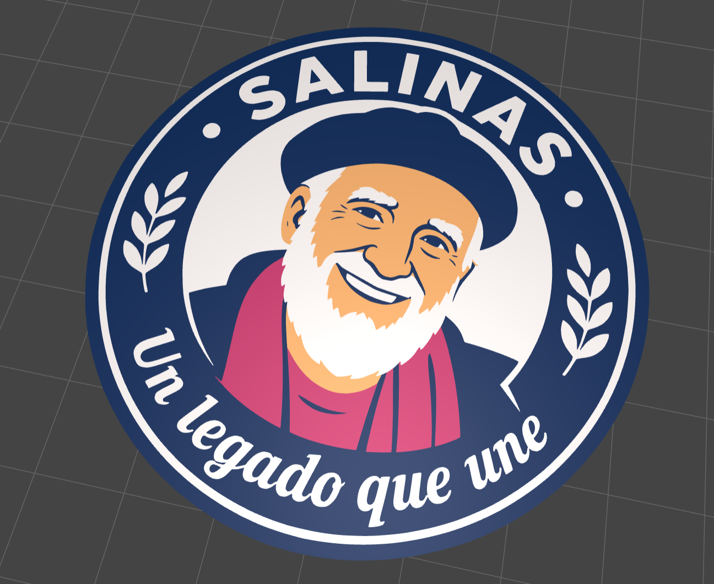
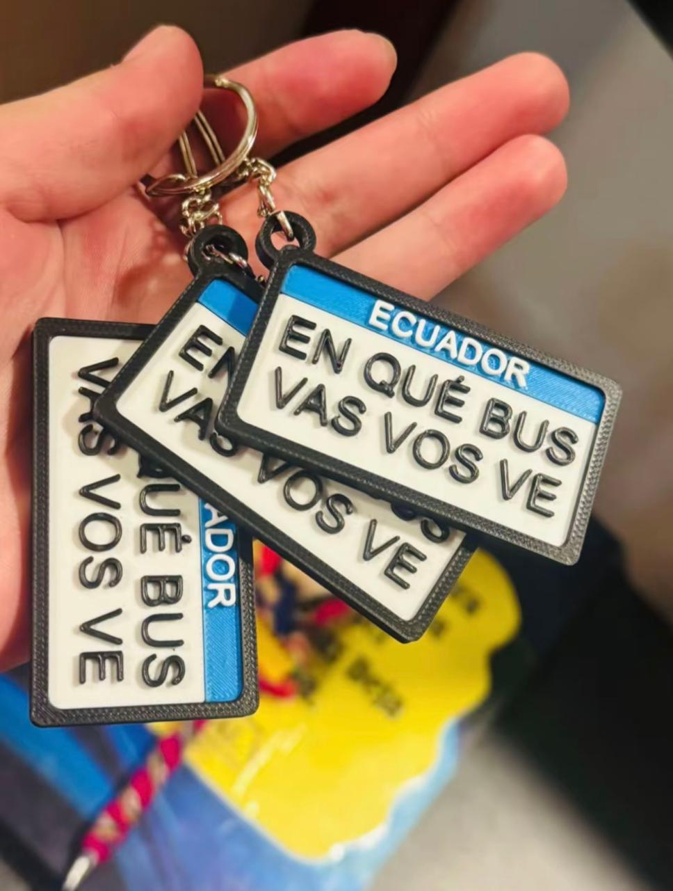

Me gusta diseñar e imprimir piezas, para poder solucionar algún problema o simplemente dejar la imaginación volar
Proyectos y creaciones
-
Souvenir imán de Padre Antonio Polo

-
Llavero de frase divertida del Ecuador

Más información sobre este tipo de proyectos: Maker World